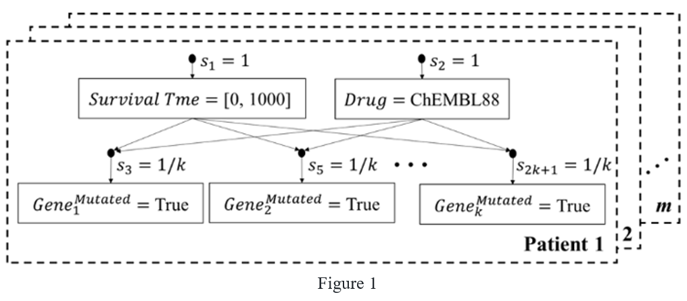
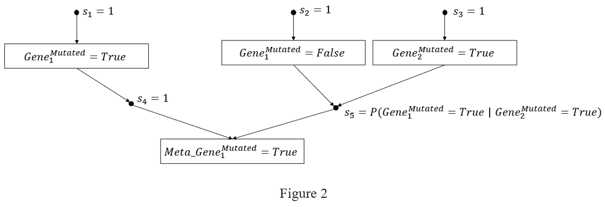

Connections Hypothesis Provider (CHP)¶
Connections Hypothesis Provider (CHP) is a service built by Dartmouth College (PI – Dr. Eugene Santos) and Tufts University (Co-PI – Joseph Gormley) in collaboration with the National Center for Advancing Translational Sciences (NCATS). CHP aims to leverage clinical data along with structured biochemical knowledge to derive a computational representation of pathway structures and molecular components to support human and machine-driven interpretation, enable pathway-based biomarker discovery, and aid in the drug development process. In its current version, CHP supports queries relating to the contribution of genetic and therapeutic features toward patient survival, as computed within the context of our test pilot: a robust cancer dataset from The Cancer Genome Atlas (TCGA). We are using this as a proving ground for our system’s basic operations as we work to incorporate structured pathway knowledge from Reactome and pathway analysis methods into the tool.
Table of Content¶
Preliminaries¶
The core system of which we reason with, the Bayesian Knowledge Base (BKB) (Santos and Santos 1999), is a probabilistic graphical model that captures dependencies over random variables. The BKB represents random variables at the instantiation level (i.e., \(X=x_{1}\) rather than \(X=?\)) which notably allows for modeling over incomplete data. We refer to an instantiated random variable as an Instantiated Node (I-Node). I-Nodes are supported by some prior evidence called a Support Node (S-Node). Moreover, BKBs can merge conflicting conditional representations using source identifiers.
Our primary form of inference is to use belief updating, or to calculate a posterior conditional probability distribution for a set of random variables given some evidence. As an example, let \(\theta_{e}=\{X_1=x_1,X_2=x_2,...,X_n=x_n\}\) be a set of specified evidence where \(X_1-X_n\) represent instantiated random variables. \(P(X_{target}| \theta_{e})\) calculates the conditional probabilities for all instantiations of \(X_{target}\) that satisfy \(\theta_{e}\). The joint probability for a satisfactory world, \(I\), is \(P(I)=\prod_{s\in{I}} s\) where \(s\in{I}\) represents the set of mutually exclusive S-Nodes that compose \(I\). Mutual exclusivity ensures inferences are devoid of conflicting I-Node instantiations. Let \(I_{\theta_{e}}\) be the set of all worlds that satisfy \(\theta_{e}\). Then \(P(\theta_{e})=\sum_{I\in{I_{\theta_{e}}}} P(I)\). For some instantiation of the target, \(X_{target}=t_{i}\), \(P(X_{target}=t_{i}|\theta_{e})\) is simply \(\frac{P(X_{target}=t_{i}, \theta_{e})}{P(\theta_{e})}\) which can be computed for all instantiations of \(X_{target}\).
CHP Data¶
CHP uses of The Cancer Genome Atlas (TCGA) data as the primary source of BKB Knowledge. We use this as a proving ground for our system’s basic operations as we work to incorporate structured pathway knowledge and pathway analysis methods into the tool. Currently ingested are the breast cancer, brain cancer and lung cancer datasets (TCGA-BRCA, TCGA-GBM and TCGA-LUAD, respectively). We leverage this data as it offers a robust decision surface, with the hopes to generalize our knowledge into the rare disease application via pathway semantics.
IMPORTANT: For gene→disease and drug→disease relationships, we accept any disease identifier even if we do not contain data for it and inference over our ingested TCGA data. This means that if you query CHP for genes associated with Parkinson’s disease, we will return flagged genes in our system that were influential in survival time semantics of the cancer patients we have ingested. Moreover, any edges within our system (gene→drug, gene→gene) are also building associations over the TCGA cancer data.
CHP System Architecture¶
The TCGA dataset is entirely composed of tabular patient data. For our purposes this data is anonymized and from each patient record a Bayesian Knowledge Fragment (BKF) is composed. A BKF represents an individual BKB fragment of knowledge supported by some source (in this case a patient identifier). BKFs can be fused together to form a larger BKB that maintains sound probabilistic semantics over the sources (even if they are conflicting). Figure 1 shows a collected set of patient data containing patient survival time, drugs they were prescribed and gene mutations. The nodes reflecting different random variable instantiations are the I-Nodes, which are supported by the black nodes, or the S-Nodes. These S-Nodes maintain the probabilities over these outcomes.
{kind=link}
Through fusion the resulting BKB is one that allows for frequentist statistics to be calculated over patients, whilst still provided the individual patient level semantics for provenance. We build unique BKBs for each disease we have ingested as well as a universal BKB that composes all patients from all disease types. Our primary form of belief updating comes from the following probabilistic semantics:
Though what can be made a target and what can be made evidence form the TCGA dataset is largely arbitrary. For instance, one could query the probability of a particular state of tumor staging given some genomic evidence though this is currently not exposed to translator. As there is some sparsity of genes (i.e., cases where genes aren’t frequently mutated) we apply a bi-gram interpolation over genes to increase the number of valid worlds that we can inference over. For each gene we calculate another gene that is highly correlated with its mutation status, and link these in a bi-gram relationship. Figure 2 shows how we model this interpolation.
{kind=link}
\(Gene_{2}^{Mutated}=True\) here operates as a stand-in for the case where a patient doesn’t have \(Gene_{1}^{Mutated}=True\). This expands the patients that we can inference over. Intuitively, note that \(s_{5}\) is set to \(P(Gene_{1}^{Mutated}=True | Gene_{2}^{Mutated}=True)\) which weights this inference space by the predictive power of \(Gene_{2}^{Mutated}=True\) predicting \(Gene_{1}^{Mutated}=True\).
CHP Single Hop Contribution Analysis¶
When inferencing over a BKB, there is often more at play than strictly the target you wish to investigate, and the evidence you’ve specified. Let \(\theta_{e}=\{X_1=x_1,X_2=x_2,...,X_n=x_n\}\) be a set of specified evidence where \(X_1-X_n\) represent instantiated random variables. \(P(X_{target} | \theta_e)\) calculates the conditional probabilities for all instantiations of \(X_{target}\) that satisfy \(\theta_e\). Often, though there are intermediate factors that have some influence on \(X_{target}\). Let \(\theta_{\neg e} = \{X_{n+1},X_{n+2},...,X_{n+m}\}\) be the inferencable factors not in \(\theta_{\neg e}. Note\) that the factors in \(\theta_{\neg e}\) are described at the random variable level as they could take on many different instantiations in the possible worlds that satisfy \(\theta_{e}\) so long as each world is mutually exclusive in their instantiations (i.e., all instantiations of a variable agree in the same world). The goal of contribution analysis is to determine how much each factor in \(\theta_{e}\) and \(\theta_{\neg e}\) impact \(X_{target}\). If \(I_{\theta_{e}}\) is the set of all valid worlds that satisfy \(\theta_e\) then let \(I_{\theta_{e+X_i=x_i}}\) be the set of all worlds that satisfy \(\theta_e\) in addition to some instantiated random variable of interest \(X_i=x_i\). If \(X_i=x_i \in \theta_e\), then \(I_{\theta_{e+X_i=x_i}} \equiv I_{\theta_e}\). If not, then \(I_{\theta_{e+X_i=x_i}} \subseteq I_{\theta_e}\). The contribution of \(X_i=x_i\) is then \(c(X_i=x_i)=\sum_{I\in I_{\theta_{e+X_i = x_i}}} P(I)\). For our contribution queries we use this to capture the impact of various intermediate factors of patients on survival time. Contributions form a ranking over these intermediate factors which we provide back to the user.
For example, in our drug wildcard to gene query, a user specifies some gene, \(Gene_{1}^{Mutated}=True,\) as evidence and wishes to find drugs that impact patient’s survival time under such circumstances. We will use Figure 3 as an example. The sources (in this case the patient identifiers) are normalized across all patients to ensure \(P(Survival Time | Gene_{1}^{Mutated}=True)\) all sums to 1.

The drugs in this case are the intermediate factors that add some weight into the end distributions of Survival Time. In this trivial example, \(P(Survival Time = [0, 3000] | Gene_{1}^{Mutated}=True) = \frac{3}{7}\) and \(P(Survival Time = [3000, 6000] | Gene_{1}^{Mutated}=True) = \frac{4}{7}\). When considering the contribution of each drug on the two instantiations of Survival Time we let \(\theta_1 = \{Survival Time = [0, 3000], Gene_{1}^{Mutated}=True\}\) and \(\theta_2 = \{Survival Time = [3000, 6000], Gene_{1}^{Mutated}=True\}\). We can then determine \(c(Drug_{ChEMBL88}=True) = \frac{1}{7}\) w.r.t \(\theta_1\) and \(\frac{4}{7}\) w.r.t \(\theta_2\). Similarly, \(c(Drug_{ChEMBL1201585}=True) = \frac{2}{7}\) for both \(\theta_1\) and \(\theta_2\). As a form of differential analysis for a drug we would like to compare across \(\theta_1\) and \(\theta_2\). To do so we divide out the probability masses of each theta so that we can compare the contributions directly. We refer to this as the relative contribution, or \(relc(X_i=x_i)\). For this example, that is:
and
This results in \(relc(Drug_{ChEMBL88=True}) = \frac{2}{3}\) and \(relc(Drug_{ChEMBL1201585=True}) = -\frac{1}{6}\). Intuitively, this metric produces values between [-1,1] where values closer to 1 are indicative of having some natural skew towards a longer survival time and values closer to -1 are indicative of having some natural skew towards a shorter survival time. Contribution values for drugs are organized by magnitude and presented back to the user. We compute these types of rankings in our gene→disease edge, our drug→disease edge and our gene→drug edge.
CHP Two Hope Contribution Analysis¶
Two Hop Contribution Analysis is simply an extension to the Single Hop Contribution Analysis. While Single Hop Contribution Analysis investigates the weight a single entity has on the survival time semantics of our ingested patients, Two Hop Contribution Analysis uses the single entity weights to direct a secondary entity’s effect on survival time. This is currently only used in our gene→gene edge. A more accurate representation of this edge would be a gene→drug→gene two-hop query, though we’ve condensed this down to simply gene→gene. The drug in this case is the single entity we use as a proxy to guide the secondary entity’s (gene) effects on survival time. We decompose this problem into two one-hop queries, gene→drug and drug→gene. The first one-hop, gene→drug, uses our One Hop Contribution Analysis setup to determine a set of weighted drugs that effect survival time. This set is often truncated to produce the top n number of contributing drugs. The second hop investigtes the secondary piece of evidence using the truncated drug set as a narrowed context scope. Following the previous example from One Hop Contribution Analysis we can now explore some new expanded evidence using our ranked drugs:
\(\quad \quad \quad \quad \quad \quad \quad \quad \quad \quad \quad \quad \quad \quad \quad \quad \quad \quad \quad \vdots\)
\(\quad \quad \quad \quad \quad \quad \quad \quad \quad \quad \quad \quad \quad \quad \quad \quad \quad \quad \quad \vdots\)
With our expanded context we can then build relative contributions over some secondary gene, \(Gene_{2}^{Mutated}=True\) by, again by calculating the contributions w.r.t each theta and summing over the theta that are in agreement on the instantiation of Survival Time. Let \(\theta_{ST=[0,3000]}\) be the set of all thetas in agreement on the instantiation of Survival Time. In this case, \(\theta_{ST=[0,3000]} = \{\theta_1, \theta_2, ..., \theta_n\}\). We can then define the contribution of \(Gene_{2}^{Mutated}=True \: w.r.t \: \theta_{ST=[0, 3000]}\) as:
Our relative contribution over this secondary entity in this example is then:
This follows the same [-1,1] semantics described in the One Hope Contribution Analysis. Returned are a ranked list of genes by \(relc\) magnitudes. The intuition behind this analysis is that gene→drug captures some mechanism that affects survival time over the patients in our data. By truncating the most contributing drugs and then using this narrower context, we can hone in on the further interaction of other genes.
References:¶
Santos, E., Jr. and Santos, E. S. (1999) A framework for building knowledge-bases under uncertainty. Journal of Experimental and Theoretical Artificial Intelligence, 11, 265-286.